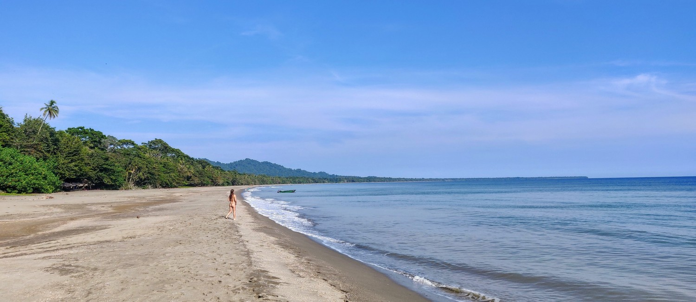
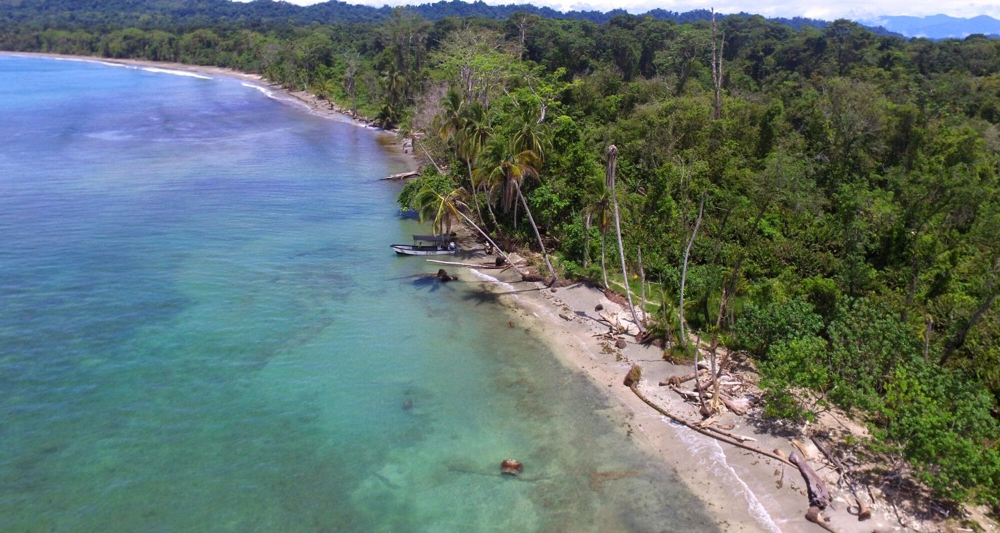
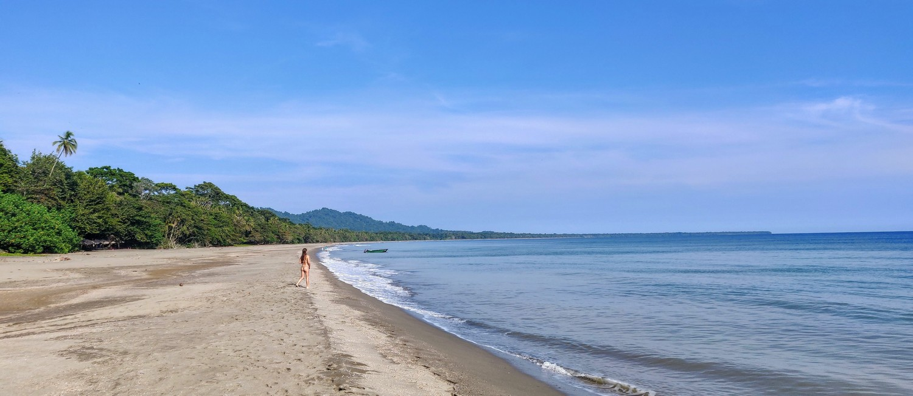
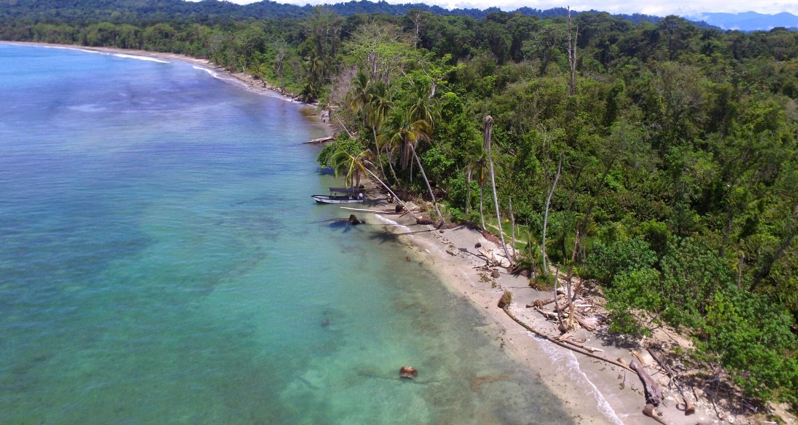

La provincia de Limón corre a lo largo de toda la costa este del país desde la frontera de Nicaragua hasta la frontera de Panamá. Caliente y húmedo durante casi todo el año, la provincia de Limón recibe más lluvia que el resto del país, con los grandes aguaceros que se producen entre mayo y agosto, y luego en diciembre y enero.
 


